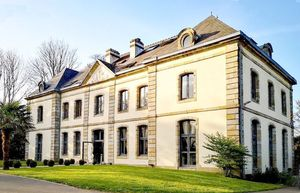
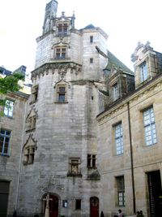
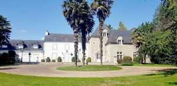

Recensement Jean-Claude Truffet
| Département | 29 — Finistère |
| Canton | Quimper |
| Commune | Quimper |
| Type d'édifice | Château |
| Période d'origine | XVI-XIX |
| Coordonnées GPS | 47° 59' 40" Nord, 4° 06' 10" Ouest Toulven -5 GPS : 47° 59' 48" Nord, 4° 05' 47" Ouest |



QUIMPER, il est de type château. Il abrite, depuis 1909, les services de la Préfecture. L'édifice se situe dans le centre-ville de Quimper, au bord de l'Odet, la construction de l'édifice est décidée, par le Conseil Général du département du Finistère, en 1904 et effectuée, sous la direction de l'architecte départemental Adolphe Vally, de 1906 à 1909. La résidence du préfet du Finistère se situe, quant à elle, Rue Sainte-Catherine, dans une maison conventuelle de l'ancien hôpital Sainte-Catherine (reconstruit vers 1675-1685), premier hôtel de préfecture (1800-1861), sur les vestiges duquel se dresse l'actuelle préfecture. L'armature de l'édifice est entièrement en béton armé, mais soigneusement masquée par un style architectural néo-Renaissance, inspiré des châteaux érigés sous le règne de Louis XII. La configuration du terrain a quelque peu obligé l'architecte à décentrer l'entrée principale, traitée comme une tour d'angle. La deuxième porte d'entrée, côté quais de l'Odet, est encadrée par deux couples de sonneurs, en costume traditionnel. L'Hôtel de la Préfecture du Finistère est un bâtiment bâti. TOULVEN Édifice construit dans la deuxième moitié du XIXe siècle dans le style néo-gothique. Il appartient à Monsieur Malherbe de la Bouexière au début du XXe siècle. Château de plan rectangulaire comportant un pavillon central cantonné de quatre tours circulaires couvertes en poivrière ; le décor de style néo-gothique se concentre sur l'axe du bâtiment (balustrade, accolade, fronton à gâble surmontant les lucarnes).
PALAIS de ROHAN, propriété du département, le musée est installé dans l'ancien Palais des Evêques de Quimper construit du XVIe siècle au XIXe siècle. Il comprend, selon un plan en équerre, deux ailes encadrant la magnifique tour d'escalier, au riche décor Renaissance, élevée en 1507 par l'Evêque Claude de Rohan. Entre celle-ci et la cathédrale, l'aile longeant la rue du Roi Gradlon (1647), est percée d'un porche par lequel s'effectue l'entrée dans la cour du musée. L'aile bordant l'Odet, élevée au XVIIIe siècle (1776) a été remaniée en 1860. Cloître dans le goût néo-gothique. Cloître néo-gothique (vers 1850). Cette tour descalier est la partie la plus ancienne du bâtiment (1507). Le faste flamboyant du décor extérieur des fenêtres et de la cheminée contraste avec la sobriété de lespace intérieur de lescalier. Seuls les paliers sont mis en valeur par des arcatures gothiques. Lescalier hélicoïdal sachève par un somptueux plafond sculpté, en « palmier », lun des éléments décoratifs les plus importants du Palais. Lensemble est soutenu, au centre, par une colonne torsadée ornée du symbole héraldique des Rohan et de lhermine de Bretagne. Le décor du pourtour présente une grande diversité (rinceaux, feuillages, nombreux animaux réels ou imaginaires, personnages énigmatiques). Ce palier permet daccéder, grâce à un petit escalier à vis, à deux pièces hautes qui servaient, aux XVIIe et XVIIIe siècles, de salles des archives. Ces appartements furent aménagés à la fin du XVIIIe siècle, dans laile sud du Palais, qui datait du XVIe siècle. La façade, au-dessus de lOdet, repose sur des arcades percées dans les remparts de la ville. À lintérieur, le premier et principal étage est le plus richement décoré. Il sorganise en une enfilade de pièces lambrissées. Cet ensemble constituait, dès 1776, la suite principale du Palais et devait accueillir les appartements de lévêque.
Quimper ; 'Evêque Claude de Rohan Toulven; Monsieur Malherbe de la Bouexière
"
Prefecture grav-1 des Indes Grav-2 Kinkiz grav-4 GPS : 47° 59' 40" Nord, 4° 06' 10" Ouest Toulven -5 GPS : 47° 59' 48" Nord, 4° 05' 47" Ouest